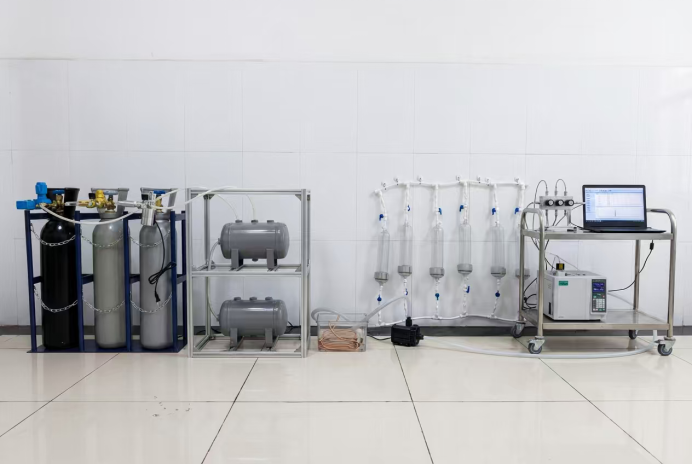
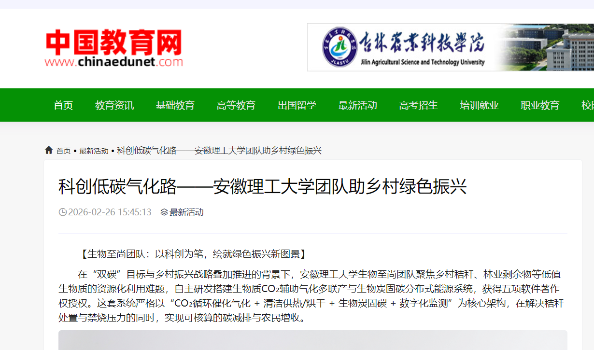
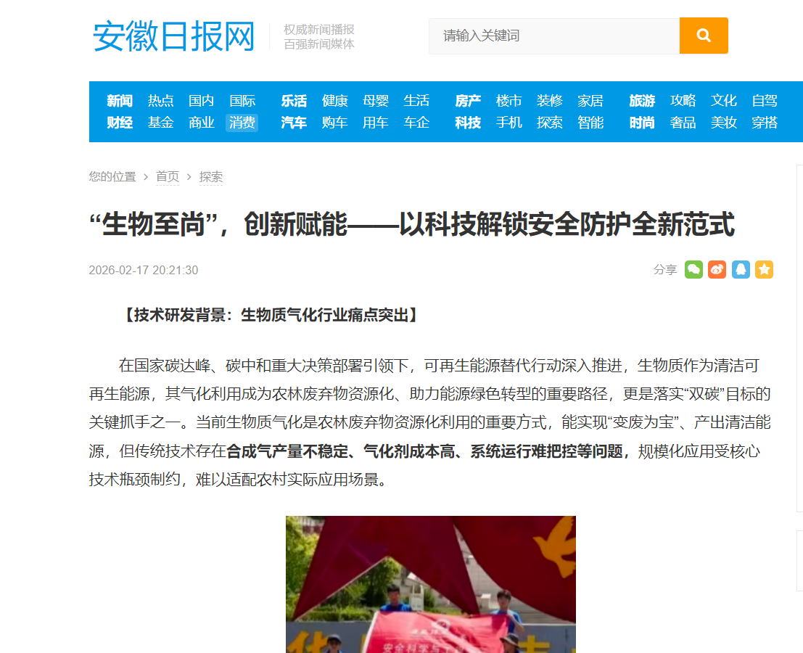
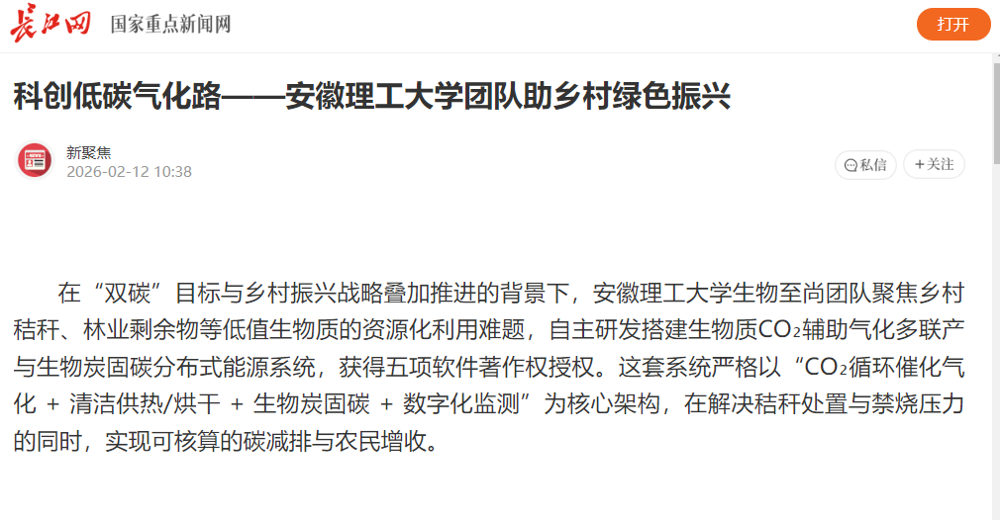
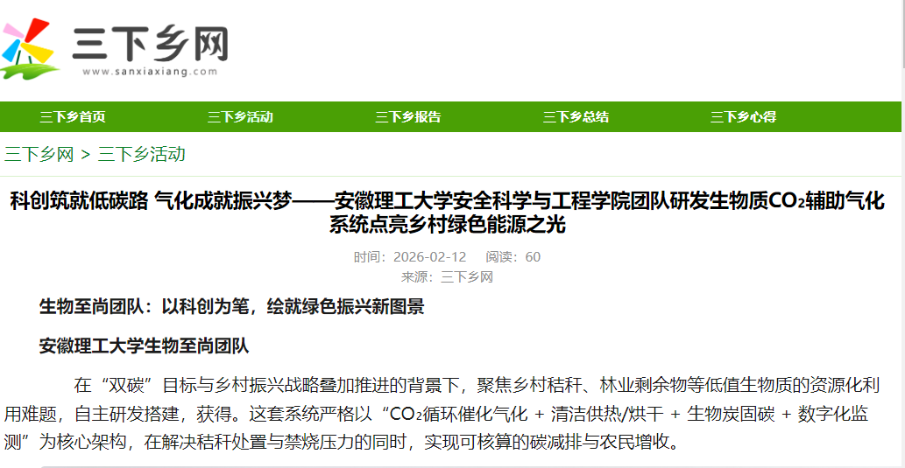
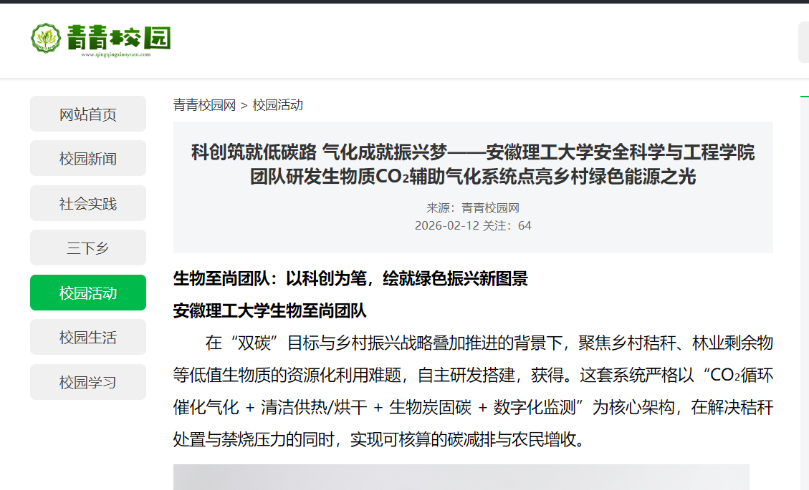
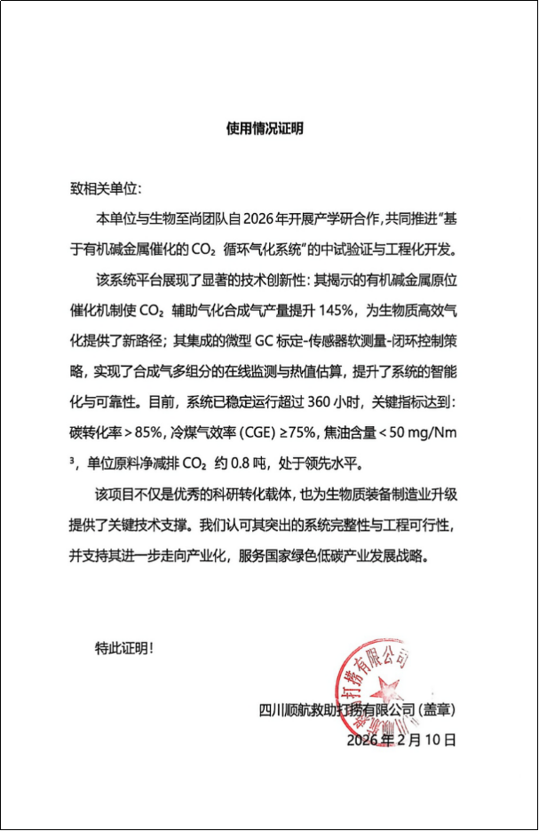
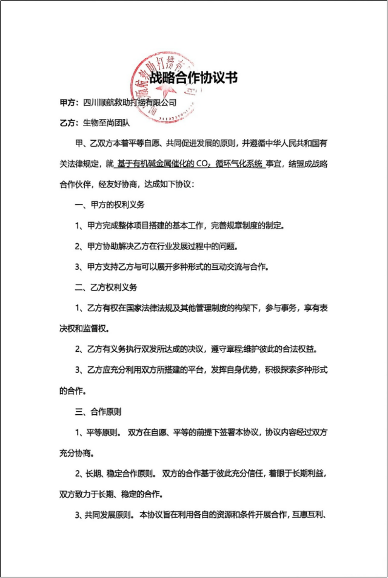
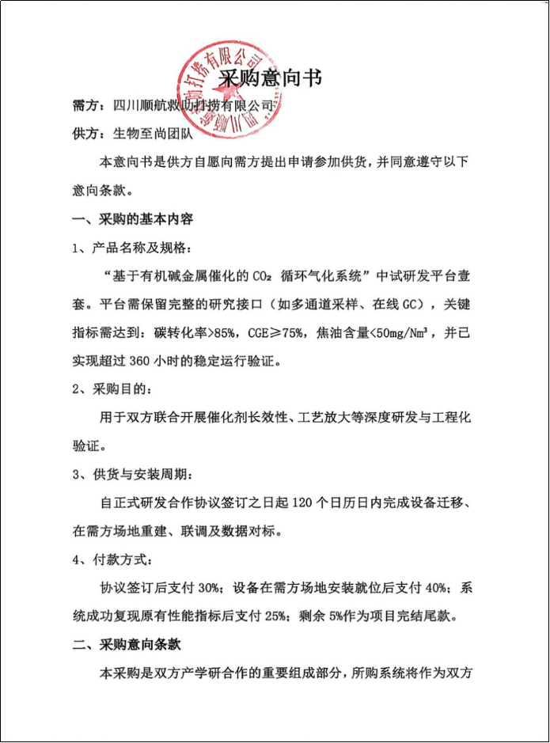
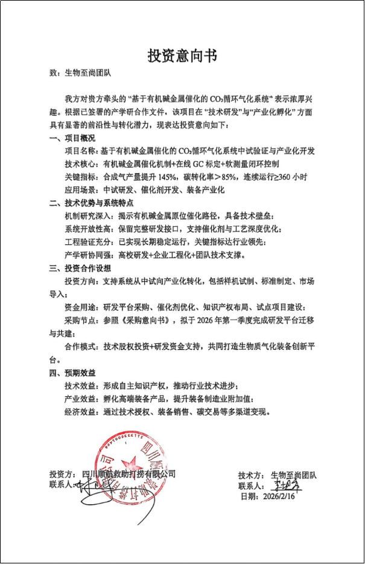

安徽绿源生物质有限公司依托安徽理工大学及深部煤炭安全开采与环境保护全国重点实验室，专注于生物质CO₂辅助气化多联产与生物炭固碳分布式能源系统的研发、生产、销售及技术服务。为县域粮食烘干、设施农业供热、乡镇集中供暖等领域提供清洁、低碳、可监测的能源解决方案及全套技术服务。

绿动乡村，碳索未来 — 以科技创新为核心，将低值生物质转化为高价值能源与碳汇产品。
服务宗旨：绿色固碳、智能高效。致力于成为县域绿色能源转型的赋能者、农业固碳减排的实践者和乡村生态振兴的贡献者。
构建人与自然和谐共生的美好图景，通过生物质CO₂辅助气化多联产系统，实现农林废弃物的高效消纳、清洁能源供应与碳资源循环利用，为“双碳”目标贡献安徽方案。
依托安徽理工大学深部煤炭安全开采与环境保护全国重点实验室
6项发明+6项实用新型+2项软著
核心团队汇聚安全工程、电气自动化、会计学等多学科人才
与中科院、中国海洋大学、青岛科技大学等深度合作
三大创新 · 重新定义生物质气化效率 · 悬停查看更多
通过NaOH溶液对松木原料进行预处理，将钠离子以有机钠(-COONa)形式锚定于生物质大分子结构中。热解阶段形成稳定的BM-Na复合结构；在CO₂气化阶段，BM-Na作为高效活性中心，大幅降低Boudouard反应(C+CO₂→2CO)的活化能，实现从“抑制”到“强催化”的功能转换。
已实现“原料自生催化+结构限域强化”双重增效，能源转化效率达48%。
将实验室CO₂钢瓶升级为部分燃烧尾气或沼气提纯副产CO₂回用，实现“碳循环+效率提升+低成本气化剂来源”的闭环。精确控制回用比例、净化要求（除尘/脱水），显著降低外购CO₂成本，提升系统整体碳转化率和能源利用效率。
已完成不同回用比例模拟计算，适配尾气净化模块，具备工程化推广条件。
构建“微型GC标定数据集+低成本传感器阵列+边缘计算”的软测量架构。通过微型气相色谱仪(Agilent 3000A)建立H₂、CO、CH₄、CO₂、轻烃标定模型，利用机器学习对多通道传感器进行交叉干扰补偿，实现CO₂/蒸汽配比、床温、进料速率的精准闭环控制。
已申请多项发明专利及软件著作权，实验室连续运行超72小时，稳定性良好。
悬停卡片查看完整技术细节
六大核心模块 · 高效转化农林废弃物
处理规模1-2吨/天，适用于村级示范点、小型合作社。占地面积小，操作简便，投资回收期3-4年。
处理规模3-5吨/天，适用于乡镇粮食烘干中心、设施农业园区。配备智能控制系统，综合效率48%。
处理规模5-10吨/天，适用于工业园区供热、集中供暖项目。全自动化运行，可接入碳交易系统。
BM-Na原位催化，实现“原料自生催化+结构限域强化”双重增效，有效气体产率提升32%，能源转化效率达48%。
全流程响应时间≤15分钟，故障停机率≤0.8%，联动区域资源数据库，为不同区域提供个性化原料适配方案。
关键组分检测误差≤±3.5%，较传统方法提升近40%，内置AI算法模型，可动态模拟不同区域原料的气化产物产量与经济收益。
供气、预热、反应、冷凝、采样、分析六大模块自由组合，支持1/3/5吨/天等多种配置，满足不同场景需求。
政策驱动：国家“双碳”目标与乡村振兴战略双重利好。《“十四五”可再生能源发展规划》明确提出“积极推进生物质能多元化开发”，《煤电低碳化改造行动方案》要求2027年前煤电机组实现至少10%的生物质掺混。全国碳市场覆盖年CO₂排放量已达51亿吨，CCER重启后生物质碳汇项目年成交规模有望突破293亿元。
市场潜力：2025年全球生物炭市场规模约20亿美元，年复合增长率超20%，中国产能占全球38%。县域粮食烘干、设施农业供热、乡镇集中供暖等领域对清洁热源需求迫切，仅粮食烘干领域市场规模预计超百亿元。
| 对比维度 | 本系统 | 传统直燃 | 常规气化 |
|---|---|---|---|
| 技术路线 | CO₂辅助气化多联产 | 直接燃烧供热/发电 | 空气/水蒸气气化 |
| 碳转化率 | ≥75% | ＜30% | 50-60% |
| 能源效率 | 48%（综合） | 20-25%（发电） | 35-40% |
| 产品结构 | 热+电+炭+碳汇 | 单一热能/电能 | 燃气为主 |
| 焦油去除率 | ≥99% | — | 焦油含量高 |
| 智能化水平 | 全流程闭环控制 | 无/基础控制 | 基础自动化 |
| 投资回收期 | 3-5年 | 8-10年 | 6-8年 |
核心设备销售 + 技术指导服务，通过与地方农机合作社、烘干厂合作建立示范点，积累市场声誉。
示范项目推广 + 碳交易分成 + 生物炭销售，面向全国产粮大县推广，探索与碳市场对接的生物炭固碳收益分成模式。
全国布局 + 海外拓展 + 系统运维托管，提供系统升级、运维托管等增值服务，输出至“一带一路”沿线国家。
注：收入结构包括设备销售（首年280万）、运营服务（108万）、生物炭销售（90万）、碳交易分成（15万），五年复合增长率57.6%。
核心团队汇聚安全工程、电气自动化、会计学等多学科人才，均具备丰富的科研创新与实践经验，依托多项专利及软件著作权，形成“技术引领、运营保障、市场突破”的核心能力。
多家权威媒体聚焦报道绿源生物质创新成果





战略合作与意向证明

使用证明

战略合作意向书

采购意向书

投资意向书